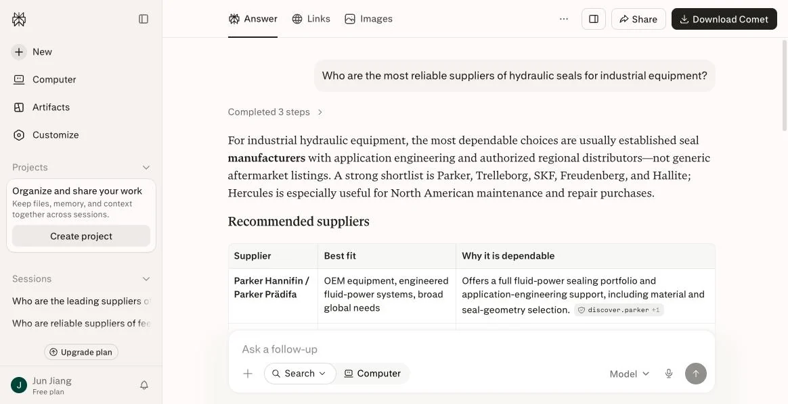
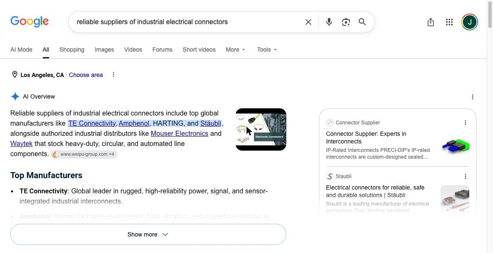

AI Visibility Audit Report
Industrial seals, hydraulic system applications
1Basic info and test setup
| Brand tested | An industrial seal manufacturer (anonymized) |
|---|---|
| Target category | Industrial seals · hydraulic system applications |
| Target markets | Europe, Southeast Asia |
| Competitors compared | International brand A, international brand B, peer manufacturer C (same home market) |
| Models tested | ChatGPT, Perplexity, Claude, Gemini |
| Test questions | 12 (written from the buyer's perspective, mostly in English) |
| Test date | 2026-07-XX |
2Results: mention rate and recommendation position
Each question was run once in each of the four models. We recorded whether the brand was named and in what position. Every result comes with a screenshot and timestamp, so you can reproduce it yourself.
| Test question | ChatGPT | Perplexity | Claude | Gemini |
|---|---|---|---|---|
| Reliable hydraulic seal suppliers in [the brand's home country]? | Not mentioned | Not mentioned | Not mentioned | Not mentioned |
| Recommended seals for high-pressure hydraulic systems? | Not mentioned | Not mentioned | Not mentioned | Not mentioned |
| Alternative to [a major brand's model] seal ring? | Not mentioned | Not mentioned | Not mentioned | Not mentioned |
| FKM (fluoroelastomer) seals rated above 200 °C? | Not mentioned | Not mentioned | Not mentioned | Not mentioned |
| … remaining 8 questions omitted … | ||||
Here is what the screenshot section of a full report actually looks like (this sample uses public categories for demonstration; your report uses your own category and competitors):


3Why competitors get recommended
| Competitor | Times named | Source types AI cited |
|---|---|---|
| International brand A | 41 / 48 | Website technical pages, trade media, academic literature, Wikipedia entries |
| International brand B | 33 / 48 | Website product database, technical white papers, industry platforms |
| Peer manufacturer C | 7 / 48 | B2B marketplace listings, a few English-language technical articles |
| Brand tested | 0 / 48 | None. No source was cited at all. |
Look at the last row. The brand isn't ranked low. It has no citable source at all. That is what "invisible to AI" actually means.
4Three-dimension gap analysis
robots.txt blocks GPTBot and ClaudeBot. This is the top-priority fix, and it takes changing one line.
5Priority fix list
Ranked by return on effort. You can complete the first two yourself.
Unblock AI crawlers
Allow GPTBot, ClaudeBot, PerplexityBot and Google-Extended in robots.txt. Without this step, nothing that follows will work.
- Effort
- 10 minutes
- Who
- Do it yourself
Put your top 3 products' specs in HTML
Move the temperature range, compression set and Shore hardness of your lead grades from PDF into web tables, with units and test methods stated.
- Effort
- 1–2 days
- Who
- Do it yourself
Add Product structured data
Mark up product entities and specification fields in JSON-LD so AI can cite them with certainty.
- Needs
- Technical support
Build competitor-model mapping
Map your specifications against mainstream international models to show up in "alternative to [brand model]" queries.
- Needs
- Industry knowledge
Seed third-party technical content
Multi-source cross-verification through trade media and professional communities. This is what decides whether your mention rate holds.
- Effort
- Ongoing